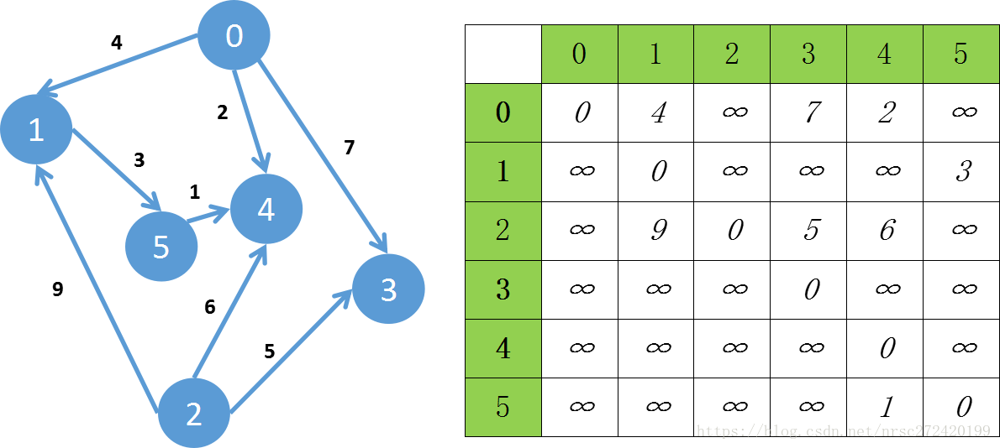

图的深度遍历和广度遍历都不算很难像极了二叉树的前序遍历和层序遍历,如下面的图,可以用右边的邻接矩阵进行表示,假设以顶点0开始对整幅图进行遍历的话,两种遍历方式的思想如下:
由初始顶点开始,沿着一条道一直走,当走到走不动的时候,再回来走一条可以走的通的道,然后再继续往下走,直到走不动,再回来…对应于本图来说就是从0开始往前走,到1----->然后从1再往前走,到5----->从5再往前走,到4------->到了这里发现没路可走了------>就往回走,回到5,看5还有没有路,发现没路----->则回到1,看1有没有路,也没有----->再回到0,看0有没有路,发现有------>则由0走到3----->走到这里发现又没有路了----->再往回走,走到0,看0还有没有路,发现有----->则由0走到4,但是4已经被遍历过了,所以再回到0,结束这次遍历过程
但是这时候还有一个2没有遍历啊,该怎么办呢?之前我们是直接就默认从0开始进行往下遍历了,但是从0开始遍历没有一条路可以走到2,为了避免这种情况,我们必须得从每一个顶点开始遍历,这样才能避免漏掉这种只出不进的顶点
于是深度优先遍历得到的遍历结果应为:0 1 5 4 3 2
广度遍历我觉得理解起来更简单,就是一层一层的进行遍历,比如说以0顶点开始,0往下指向1,3,4,遍历的时候就先遍历0,然后再遍历它下一层的1,3,4------>然后分别遍历1,3,4的下一层---->而1,3,4只有1有下一层,则遍历1的下一层5,同理最后遍历2
即广度优先遍历得到的遍历结果应为:0 1 3 4 5 2
和二叉树的层序遍历一样,图的广度遍历也用到了队列,对于下图而言,先将0放入队首----->然后遍历0并将0从队列中取出,同时将0的邻接点1,3,4入队,这样队首就是1----->然后将1出队,并将1的邻接点入队(这里只有5), 这样队首就是3----->然后将3弹出并将3的邻接点入队(这里没有),这样队首就是4----->然后将4弹出并将4的邻接点入队(这里没有),队首就是从1入队的1的第一个邻接点(这里是5)---->然后将5弹出----->直到队列为空这样就完成了由定点0开始的广度优先遍历
